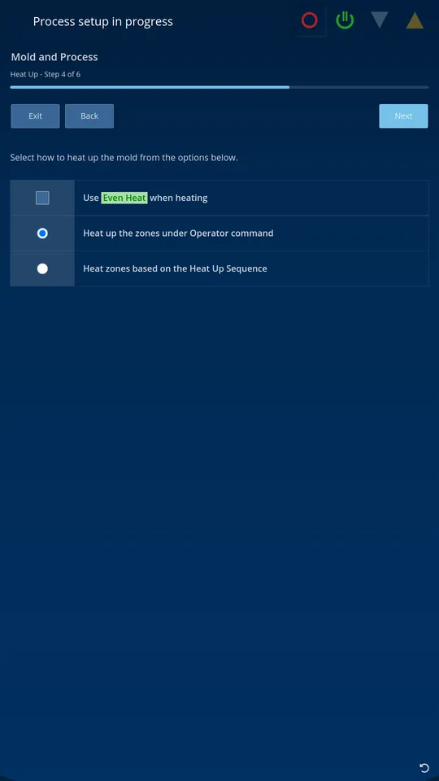
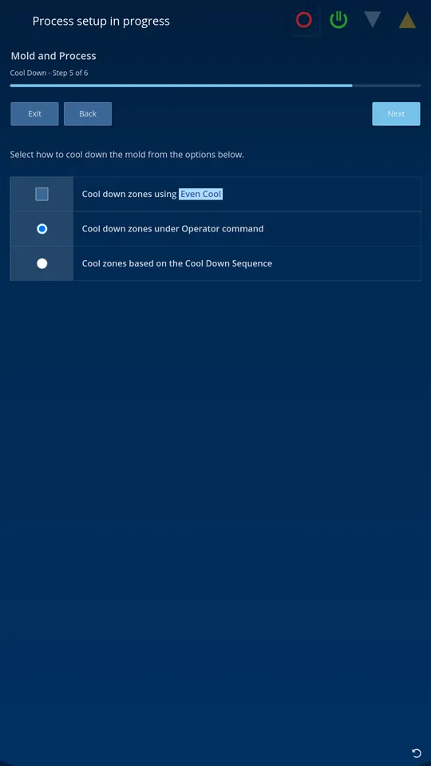

Intelligentes Heizen & Kühlen
Even Heat & Even Cool: Jede Zone kommt gleichzeitig an.
Düsenspitzen heizen in Sekunden, ein schwerer Verteiler braucht Minuten. Sich selbst überlassen, stehen die Spitzen auf voller Temperatur und warten auf den Verteiler. Even Heat hält die schnellen Zonen zurück, damit die ganze Gruppe gemeinsam aufheizt, und die Even Cool macht dasselbe beim Abkühlen.
- Gruppieren Sie Ihre Zonen, zum Beispiel Düsenspitzen und Verteiler, mit wenigen Berührungen oder per Drag-and-drop.
- Schalten Sie „Even Heat beim Aufheizen verwenden“ ein, im Mold Wizard oder in den Prozesseinstellungen.
- Der G25 hält die Gruppe im Gleichschritt. Beim Aufheizen bleibt jede Zone höchstens 11 °C (20 °F) über der kältesten Zone ihrer Gruppe, sodass die Spitzen nicht lange auf Solltemperatur stehen und auf den Verteiler warten.
- Even Cool spiegelt das. Beim Abkühlen bleiben alle Zonen der Gruppe höchstens 11 °C (20 °F) unter der heißesten Zone, während die Solltemperaturen gemeinsam gesenkt werden.
- Schonend für den Kunststoff
- Weniger Zeit auf Temperatur
- Je Gruppe und Prozess einstellbar
Die Idee im Bild
DüsenspitzeVerteilerSchraffiert: Die Spitze wartet auf voller Temperatur

